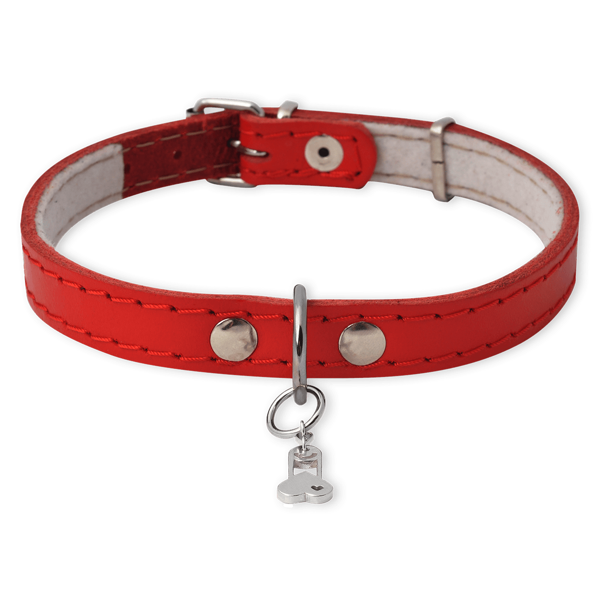
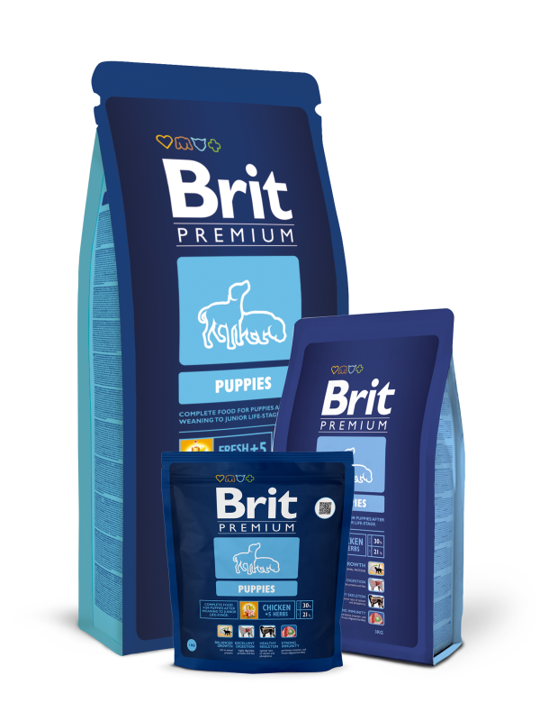
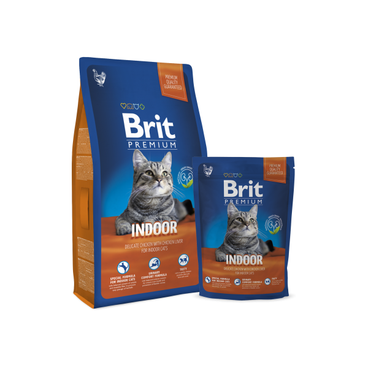
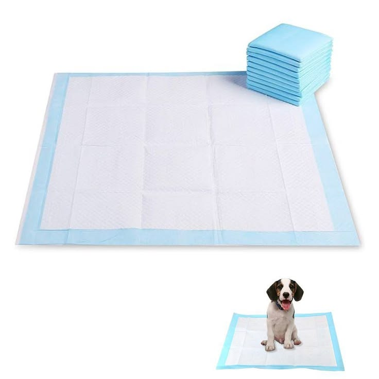
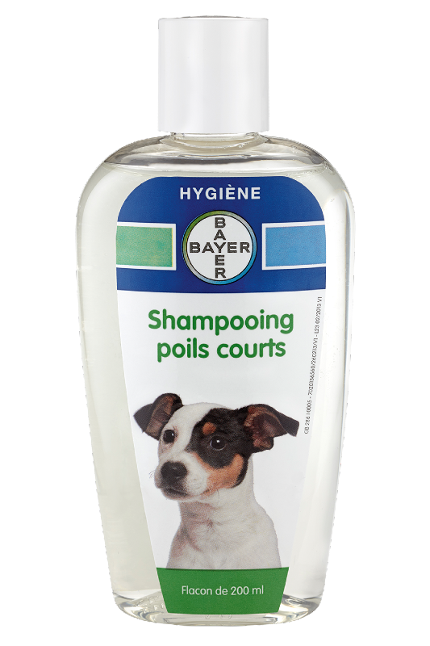

Coleira Premium
Coleira ajustável confeccionada em nylon resistente, indicada para cães de pequeno e médio porte.
R$ 39,90
Cuidando do seu melhor amigo com carinho e dedicação
Conheça alguns dos nossos produtos disponíveis no PetShop Amicão. Trabalhamos com acessórios, rações e produtos de higiene para oferecer mais conforto, saúde e bem-estar ao seu pet.

Coleira ajustável confeccionada em nylon resistente, indicada para cães de pequeno e médio porte.
R$ 39,90

Caminha macia com tecido acolchoado, proporcionando maior conforto para o descanso do pet.
R$ 129,90

Ração seca indicada para cães adultos, rica em proteínas, vitaminas e minerais para uma alimentação equilibrada.
R$ 149,90

Ração seca desenvolvida para gatos adultos, proporcionando nutrição completa e auxiliando na saúde do trato urinário.
R$ 119,90

Tapete superabsorvente para cães, ideal para manter o ambiente limpo e facilitar o treinamento do pet.
R$ 59,90

Shampoo de uso veterinário com fórmula suave, indicado para cães e gatos de todas as idades.
R$ 34,90